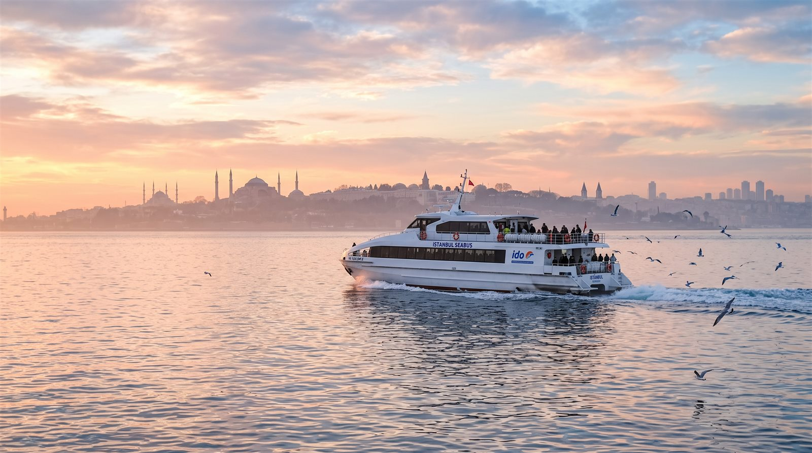
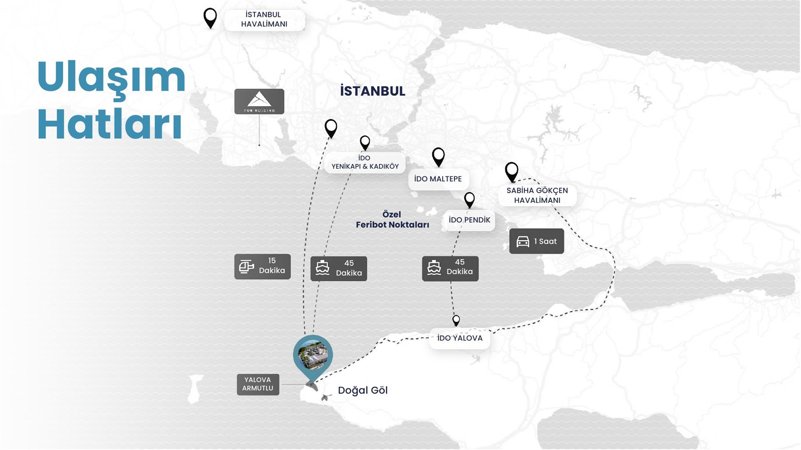

Yenikapı'dan İDO'ya binin; 45 dakikada Marmara'yı aşın, 15 dakikada yarımadadaki evinize varın. Şehre yakın, şehrin ritminden uzak.
Kalkış noktanızı seçin; adım adım rotanızı ve yaklaşık toplam yolculuk sürenizi anında görün.
Temsilîdir. Süreler yaklaşıktır; İDO sefer saatlerine, hava ve trafik koşullarına göre değişebilir. Güncel tarifeyi kontrol ediniz.
Bu Rotayla Deneyim Günü PlanlayınMarmara'nın iki yakasını bağlayan hızlı feribot hatları; Yenikapı ve Pendik kalkışlı seferlerle Armutlu Yarımadası'na ulaşırsınız.

Harita bilgilendirme amaçlıdır; hat ve sefer bilgileri için İDO'nun güncel tarifesini esas alınız.
Armutlu Yarımadası; İstanbul'a, havalimanlarına ve Marmara'nın kayak merkezlerine aynı anda yakın kalan ender noktalardan biri.
Üç büyük kayak merkezi gün dönüşü mesafede. Kayak sonrası termal havuz keyfi, kış tatilinizi ikiye katlar.
Türkiye'nin klasiği. Sabah teleferikte, akşam termal lagünde — aynı gün, iki mevsim.
Yaklaşık 1 sa 30 dkMarmara'nın hızla yükselen pisti; İzmit Körfezi manzarasına karşı kayak.
Yaklaşık 1 sa 45 dkGeniş pistleriyle hafta sonu kaçamağının gözde adresi; dönüşte termal mola sizi bekler.
Yaklaşık 3 sa 45 dkYerleşke; özel feribot yanaşma noktaları, karşılama binasındaki helikopter pisti ve deniz uçağı iskelesi konseptiyle planlanıyor. Tor Thermal mobil uygulaması ise tüm bu ayrıcalıkları cebinize taşımak üzere tasarlanıyor.
Helikopter pisti, deniz uçağı iskelesi ve mobil uygulama hizmetleri konsept aşamasındadır; bağlayıcı taahhüt niteliği taşımaz. Görseller temsilîdir.

Termal günlerinizin arasına bir doğa molası ekleyin: fener, şelale, göl ve yayla — hepsi kısa bir sürüş mesafesinde.
Yarımadanın ucundaki tarihi deniz feneri. Fünikülerle çıkın; gün batımını burada karşılayın.
Yerleşke içinde Rotayı İnceleyinYalova Termal'in ardındaki orman patikasında saklı, yosunlu kayalardan dökülen şelale.
Yaklaşık 40 dk Rotayı İnceleyinEfsanesiyle ünlü yayla gölü; piknik ve fotoğraf molası için ideal bir durak.
Yaklaşık 45 dk Rotayı İnceleyinErikli Yaylası'nın serin suları ve yayla kahvaltısıyla tamamlanan bir sabah rotası.
Yaklaşık 35 dk Rotayı İnceleyinFeribot saatinize göre karşılamanızı planlayalım. Yerleşkeyi gezin, termal suyu deneyin; kararınızı evinizde, baskısız verin.